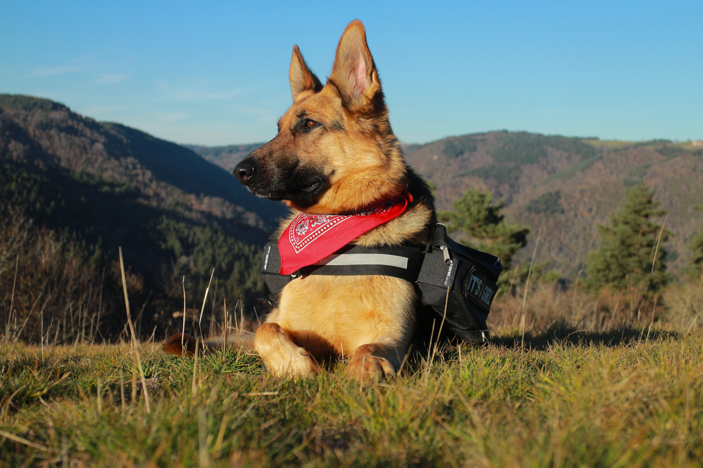
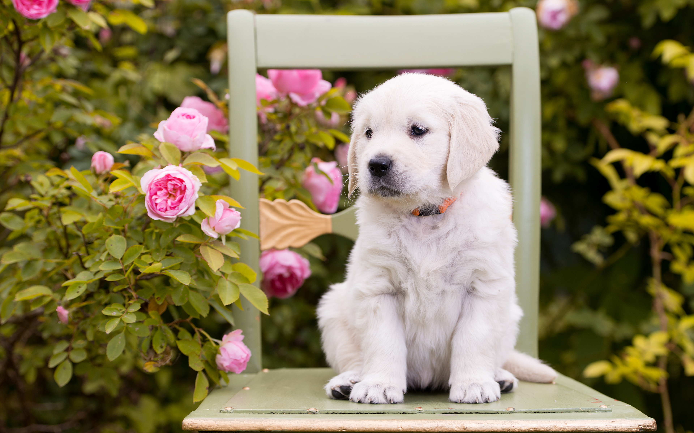

Dog World
Inicio
Mascotas
Multimedia
Blog
Más
Bienvenidos a nuestro Blog
Nuestro Blog

Los peludos más inteligentes

Escoge el peludo ideal
Deportes con tu mejor amigo
Próximamente tendremos más contenido